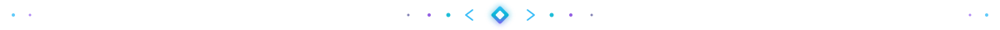

Стилизовано под эстетику профиля Andy-Clashbit (Tokyo Night • Cyberpunk • Deep Space)
Градиентная лазерная линия с мягким затуханием к краям (палитра шапки: циан + фиолетовый). В центре — светящийся квантовый ромб с микро-скобками < ◆ > и мягкой пульсацией. Идеально связывает баннеры и карточки стека.

Неоновая шина данных с центральной мини-капсулой </> и мигающим зеленым курсором терминала. Подчёркивает профиль разработчика, чистый код и консольную эстетику.
Тонкая линия (1.5px) с деликатной бегущей световой волной без центральных иконок. Даёт максимальную лёгкость и не перегружает страницу при многократном повторении.